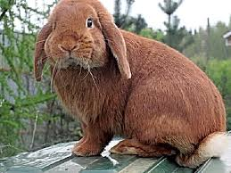
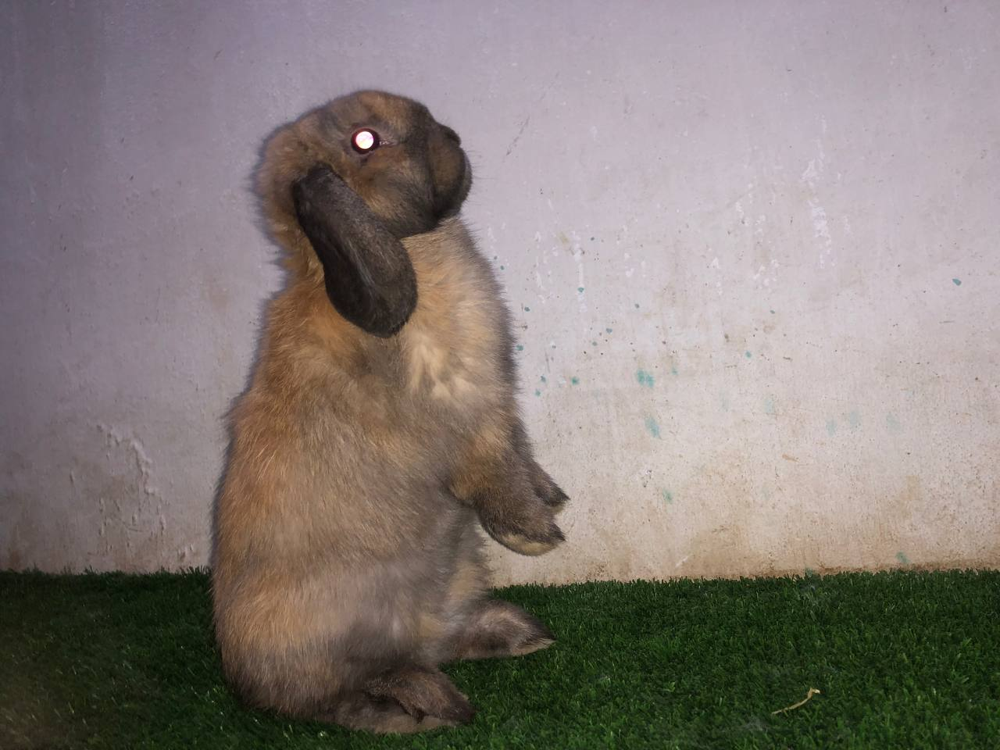
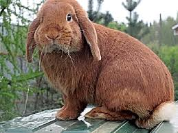
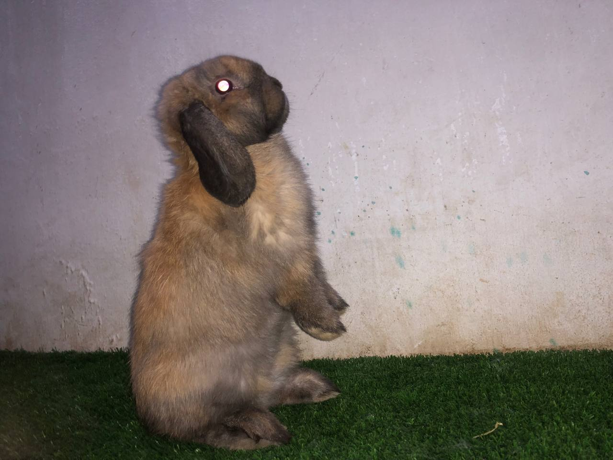

Hermelinning tavsifi
Bugungi kunda germelinning kelib chiqishi aniq aniqlanmagan.... Bunday noodatiy naslni oq oq quyon va kichik kumush quyonni kesib o'tish natijasida olingan deb ishonishadi.
Tashqi ko'rinish
Hermlines naslga juda xosdir, yumshoq va ipak kabi, yorqinligi, soch uzunligi, uzunligi 1,8-2,0 sm ga etadi, hayvonning bo'yi 32-34 sm gacha, bo'yi aniq bo'lmasdan qisqa va juda ixcham tanaga ega. yaxshi rivojlangan va kuchli oksipital qism. Oyoqlari kalta, ammo juda kuchli. Ko'krak qafasi etarlicha keng va chuqurdir. Voyaga etgan odamda elkama pichog'i orqasidagi belbog 'taxminan 22-24 sm.
 


